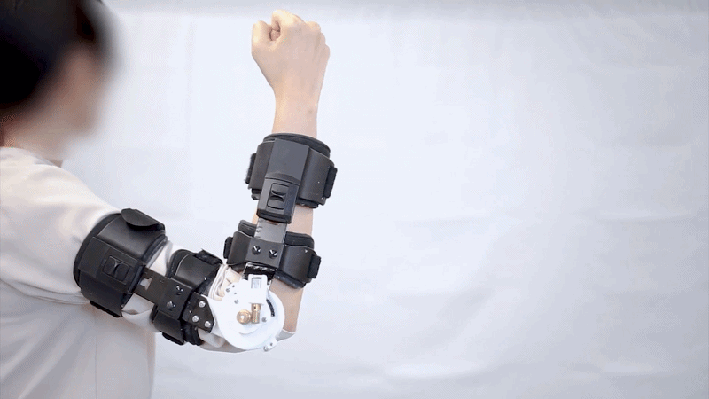

We present DilatArm, a passive haptic exoskeleton that provides tunable velocity-dependent resistance through a dilatant-fluid-based mechanism. Unlike conventional passive resistive systems with fixed resistance characteristics, DilatArm incorporates a custom shape-changing blade mechanism that mechanically reconfigures the resistance profile without motors, sensors, or continuous power input. The resulting system is low-cost, lightweight, safe, and battery-free. We conducted three technical evaluations to characterize how design parameters influence resistance generation, followed by two user studies investigating users’ perception and behavioral responses. Results show that users can perceive resistance changes (JND = 24.6° on average) and that DilatArm linearly regulates movement speed (R2 = 0.94). Based on these findings, we derive a design space that maps module configurations to resistance, perception, and behavior, providing guidance for custom haptic interfaces based on adjustable motion-based resistance. We discuss DilatArm’s potential applications for spatial interaction through movement regulation, including embodied simulation of motor impairments, motor-skill learning, and assistive tools for physical therapy.